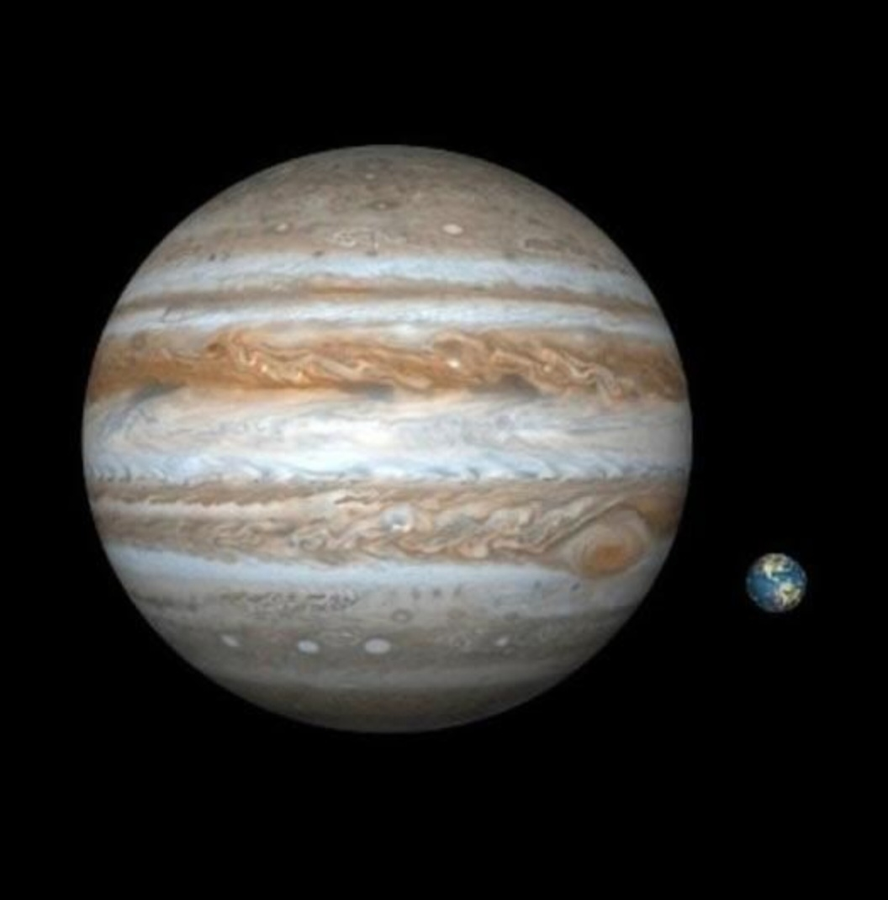

1. Which is the largest planet in the Solar System?
2. Jupiter is also known as the ______ of planets.
3. How many Earths can fit inside Jupiter?
4. Which number planet is Jupiter from the Sun?
5. What gases mainly form Jupiter?
6. Does Jupiter have a solid surface?
7. What is the name of Jupiter’s big storm?
8. Is the Great Red Spot bigger than Earth?
9. How many moons does Jupiter have approximately?
10. What is the largest moon of Jupiter?
11. Is Jupiter a rocky planet or gas giant?
12. What color is Jupiter mostly seen as?
13. Does Jupiter have rings?
14. What protects Earth from some asteroids?
15. Which planet is called the King of Planets?
16. Is Jupiter visible from Earth without telescope?
17. What makes Jupiter’s clouds move fast?
18. Which force is very strong on Jupiter?
19. What is Jupiter’s atmosphere mostly made of?
20. Is Jupiter closer or farther than Mars from the Sun?